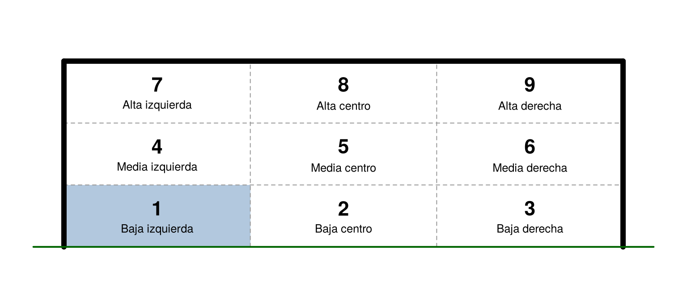
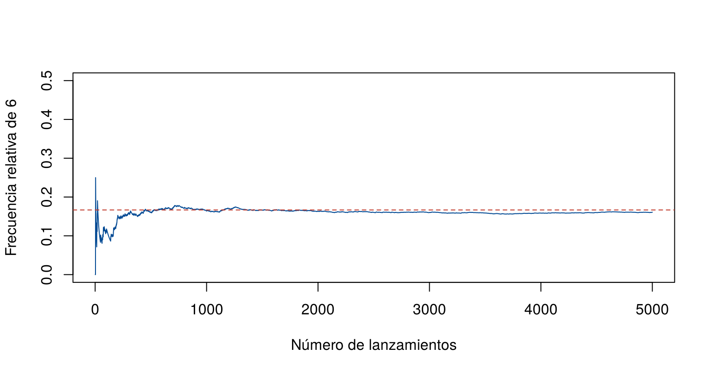
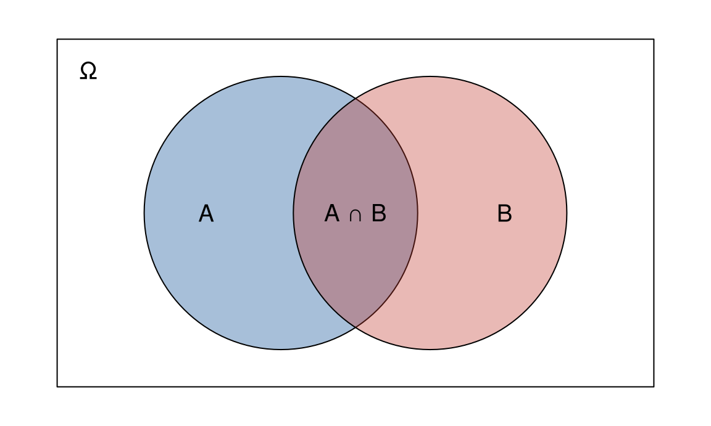

La probabilidad es un número entre 0 y 1 que mide qué tan posible es que ocurra un evento. Un valor cercano a 0 indica que el evento casi nunca ocurre y uno cercano a 1, que ocurre casi siempre.
Hay varias formas de asignar ese número. Esta página presenta los tres enfoques más usados, las reglas que debe cumplir cualquier probabilidad y la forma de estimar probabilidades con simulación en R. Los bloques de código se ejecutan en orden.
| Enfoque | Cómo se asigna la probabilidad | Cuándo se usa |
|---|---|---|
| Clásico | Casos favorables sobre casos posibles | Cuando todos los resultados tienen la misma probabilidad, como en un dado balanceado |
| Frecuentista | Proporción de veces que ocurre el evento en muchas repeticiones | Cuando el experimento se puede repetir o hay registros históricos |
| Subjetivo | Juicio de un experto | Cuando el evento es único o no hay datos suficientes |
Si todos los resultados del espacio muestral tienen la misma probabilidad, la probabilidad de un evento \(A\) se calcula con la regla de Laplace:
\[ P(A) = \frac{\text{número de resultados en } A}{\text{número de resultados en } \Omega} \]
Por ejemplo, al lanzar dos monedas balanceadas, \(\Omega = \{(c, c), (c, s), (s, c), (s, s)\}\) y la probabilidad de obtener dos caras es \(1/4 = 0.25\). Al lanzar dos dados balanceados, la probabilidad de que la suma sea menor que 4 es \(3/36 = 0.083\), porque solo los pares \((1, 1)\), \((1, 2)\) y \((2, 1)\) cumplen la condición.
En R, con el espacio muestral de los dos dados, la
regla de Laplace es la proporción de filas que cumplen la condición. La
función mean() aplicada a una condición calcula esa
proporción, porque cuenta cada TRUE como 1 y cada
FALSE como 0:
dados <- expand.grid(d1 = 1:6, d2 = 1:6)
mean(dados$d1 + dados$d2 < 4) # P(suma menor que 4)[1] 0.08333333mean(dados$d1 + dados$d2 == 7) # P(suma igual a 7)[1] 0.1666667La regla de Laplace solo vale si los resultados son igualmente probables. Si el dado está cargado, o si se registra la suma en lugar del par, los resultados no tienen la misma probabilidad y la regla da valores incorrectos.
La probabilidad de un evento se estima con su frecuencia relativa: el número de veces que ocurre dividido por el número de repeticiones, \(n\). Cuantas más repeticiones haya, más cerca estará la frecuencia relativa de la probabilidad.
Un arquero quiere saber hacia dónde patea los penaltis un jugador. Divide el arco en nueve zonas y revisa los registros de cobros anteriores. La figura muestra las zonas, numeradas de abajo hacia arriba y de izquierda a derecha, vistas desde el punto del penalti.
par(mar = c(0.5, 0.5, 0.5, 0.5))
plot(0, 0, type = "n", xlim = c(-0.4, 7.72), ylim = c(-0.3, 2.74), axes = FALSE, xlab = "", ylab = "", asp = 1)
# zona 1 resaltada y cuadrícula de 3 x 3
rect(0, 0, 7.32 / 3, 2.44 / 3, col = adjustcolor("#034A94", 0.3), border = NA)
segments(7.32 * (1:2) / 3, 0, 7.32 * (1:2) / 3, 2.44, col = "gray60", lty = 2)
segments(0, 2.44 * (1:2) / 3, 7.32, 2.44 * (1:2) / 3, col = "gray60", lty = 2)
# postes, travesaño y línea de gol (un arco mide 7.32 m por 2.44 m)
segments(c(0, 7.32, 0), c(0, 0, 2.44), c(0, 7.32, 7.32), c(2.44, 2.44, 2.44), lwd = 6)
segments(-0.4, 0, 7.72, 0, lwd = 2, col = "darkgreen")
# número y nombre de cada zona
centro_x <- rep(7.32 * c(1, 3, 5) / 6, times = 3)
centro_y <- rep(2.44 * c(1, 3, 5) / 6, each = 3)
nombres <- paste(rep(c("Baja", "Media", "Alta"), each = 3), rep(c("izquierda", "centro", "derecha"), times = 3))
text(centro_x, centro_y + 0.1, 1:9, font = 2, cex = 1.4)
text(centro_x, centro_y - 0.18, nombres, cex = 0.8)
Las nueve zonas del arco. La zona 1, resaltada, es la parte baja izquierda.
La probabilidad de que el jugador patee a la zona 1, la parte baja izquierda, se estima como el número de cobros a esa zona dividido por el total de cobros registrados. Con 10 cobros la estimación es poco confiable; con 200, es mucho mejor.
En el siguiente gráfico interactivo, un jugador simulado patea penaltis. Sus probabilidades reales están ocultas: el reto es estimarlas con los cobros. Use los botones para patear y observe dos cosas. En el arco, cada zona muestra el número de cobros y, entre paréntesis, su frecuencia relativa; entre más oscura la zona, más cobros recibe. En la gráfica de la derecha, la línea azul muestra cómo cambia la frecuencia relativa de la zona 1 a medida que se acumulan cobros. Al final, marque la casilla para comparar con las probabilidades reales.
Con pocos cobros, la frecuencia relativa de la zona 1 salta mucho;
con cientos de cobros, se mantiene cerca de 0.20. En R,
la misma simulación se hace con sample(), que elige una
zona en cada cobro según las probabilidades del argumento
prob:
set.seed(2026)
prob_real <- c(0.20, 0.05, 0.15, 0.12, 0.03, 0.10, 0.15, 0.05, 0.15) # zonas 1 a 9
cobros <- sample(1:9, size = 2000, replace = TRUE, prob = prob_real)
round(prop.table(table(cobros)), 3) # frecuencia relativa de cada zona en 2000 cobroscobros
1 2 3 4 5 6 7 8 9
0.198 0.050 0.145 0.126 0.032 0.090 0.157 0.048 0.155 Lo mismo ocurre con un dado. La función sample() lo
lanza 5 000 veces y cumsum() acumula cuántos 6 han salido
después de cada lanzamiento:
set.seed(2026)
lanzamientos <- sample(1:6, size = 5000, replace = TRUE)
frecuencia <- cumsum(lanzamientos == 6) / (1:5000)
plot(frecuencia, type = "l", col = "#034A94", ylim = c(0, 0.5),
xlab = "Número de lanzamientos", ylab = "Frecuencia relativa de 6")
abline(h = 1/6, col = "#C0392B", lty = 2)
Frecuencia relativa de obtener 6 al lanzar un dado. La línea roja es la probabilidad 1/6.
frecuencia[c(10, 100, 1000, 5000)] # frecuencia relativa con 10, 100, 1000 y 5000 lanzamientos[1] 0.1000 0.1100 0.1640 0.1608Con pocos lanzamientos la frecuencia relativa se aleja bastante de \(1/6 = 0.167\). Con muchos, se mantiene cerca.
La probabilidad la asigna un experto con base en su formación, su experiencia y el contexto. No se obtiene de una fórmula ni de frecuencias observadas.
Por ejemplo, un médico epidemiólogo estima en 0.3 la probabilidad de que un paciente desarrolle complicaciones graves por una infección viral. No tiene datos de casos idénticos, pero integra lo que sabe de la enfermedad, del estado del paciente y de casos parecidos. Este enfoque es útil cuando hay que decidir sin datos suficientes. Su limitación es que dos expertos pueden asignar valores distintos.
Sin importar el enfoque, toda probabilidad cumple tres reglas básicas, llamadas axiomas de Kolmogorov:
Por ejemplo, con dos dados, los eventos “la suma es 7” y “la suma es 8” son excluyentes, así que \(P(\text{suma 7 o suma 8}) = 6/36 + 5/36 = 11/36\).
mean(dados$d1 + dados$d2 == 7 | dados$d1 + dados$d2 == 8) # el símbolo | significa "o"[1] 0.305555611 / 36[1] 0.3055556De los tres axiomas se obtienen las reglas que se usan en el resto del curso:
| Regla | Fórmula | Significado |
|---|---|---|
| Rango | \(0 \leq P(A) \leq 1\) | Ninguna probabilidad es negativa ni mayor que 1 |
| Evento imposible | \(P(\emptyset) = 0\) | Lo que no puede ocurrir tiene probabilidad 0 |
| Complemento | \(P(A^c) = 1 - P(A)\) | La probabilidad de que \(A\) no ocurra |
| Unión de dos eventos | \(P(A \cup B) = P(A) + P(B) - P(A \cap B)\) | La probabilidad de que ocurra \(A\), \(B\) o ambos |
La regla del complemento es útil cuando es más fácil calcular lo contrario. Por ejemplo, la probabilidad de obtener al menos un 6 al lanzar dos dados es uno menos la probabilidad de no obtener ningún 6: \(1 - 25/36 = 11/36\).
La regla de la unión resta la intersección porque, al sumar \(P(A)\) y \(P(B)\), los resultados que están en ambos eventos se cuentan dos veces. El diagrama de Venn de la figura siguiente lo muestra.
par(mar = c(0.5, 0.5, 0.5, 0.5))
plot(0, 0, type = "n", xlim = c(0, 10), ylim = c(0, 6), axes = FALSE, xlab = "", ylab = "", asp = 1)
rect(0.2, 0.2, 9.8, 5.8)
symbols(c(3.8, 6.2), c(3, 3), circles = c(2.2, 2.2), add = TRUE, inches = FALSE,
bg = c(adjustcolor("#034A94", 0.35), adjustcolor("#C0392B", 0.35)))
text(c(2.6, 7.4, 5, 0.7), c(3, 3, 3, 5.3), c("A", "B", "A ∩ B", "Ω"), cex = 1.2)
Diagrama de Venn de dos eventos. La zona morada, la intersección, queda dentro de A y dentro de B.
Con dos dados, sean \(A\): el primer dado es 6, y \(B\): el segundo dado es 6. Entonces \(P(A) = P(B) = 6/36\) y \(P(A \cap B) = 1/36\), porque solo el par \((6, 6)\) está en ambos:
P_A <- mean(dados$d1 == 6)
P_B <- mean(dados$d2 == 6)
P_AB <- mean(dados$d1 == 6 & dados$d2 == 6) # el símbolo & significa "y"
P_A + P_B - P_AB # regla de la unión[1] 0.3055556mean(dados$d1 == 6 | dados$d2 == 6) # conteo directo[1] 0.30555561 - mean(dados$d1 != 6 & dados$d2 != 6) # regla del complemento[1] 0.3055556Las tres formas dan \(11/36 = 0.306\).
Cuando un cálculo es largo, se puede simular el experimento muchas veces en R y usar la frecuencia relativa como estimación, como en el enfoque frecuentista. Los pasos son:
sample().replicate().mean().Por ejemplo, para estimar la probabilidad de que la suma de dos dados sea 7:
set.seed(2026)
suma_siete <- replicate(10000, sum(sample(1:6, size = 2, replace = TRUE)) == 7)
mean(suma_siete) # estimación por simulación[1] 0.16546 / 36 # valor exacto[1] 0.1666667La función set.seed() fija el punto de partida de los
números aleatorios. Así, quien ejecute el código obtiene el mismo
resultado. La estimación no es exactamente igual al valor real, pero se
acerca más cuantas más repeticiones se usen.
| Problema | Causa | Solución |
|---|---|---|
| \(P(A \cup B)\) da más de 1 | Se sumó dos veces la intersección | Usar \(P(A) + P(B) - P(A \cap B)\) |
| Usar la regla de Laplace con un dado cargado | Los resultados no son igualmente probables | Usar frecuencias o el modelo correcto |
| La simulación da un resultado distinto cada vez | No se fijó la semilla | Usar set.seed() antes de simular |
| La estimación por simulación se aleja del valor real | Se usaron pocas repeticiones | Aumentar el número de repeticiones |
| Confundir \(P(A^c)\) con \(P(A)\) | No se leyó bien el evento | Escribir el evento con palabras antes de calcular |
Diga qué enfoque de probabilidad se usa en cada caso:
Frecuentista: usa la proporción observada en los registros.
Clásico: las 52 cartas tienen la misma probabilidad de salir.
Subjetivo: es el juicio del ingeniero sobre un proyecto único.
Se lanzan dos monedas balanceadas. Calcule la probabilidad de obtener al menos una cara, primero con la regla de Laplace y luego con el complemento.
De los cuatro resultados, tres tienen al menos una cara: \((c, c)\), \((c, s)\) y \((s, c)\). Entonces \(P = 3/4 = 0.75\). Con el complemento: el único resultado sin caras es \((s, s)\), así que \(P = 1 - 1/4 = 0.75\).
monedas <- expand.grid(m1 = c("c", "s"), m2 = c("c", "s"))
mean(monedas$m1 == "c" | monedas$m2 == "c")[1] 0.75Con dos dados, sean \(A\): la suma es 7, y \(B\): el primer dado es par. Calcule \(P(A \cup B)\) con la regla de la unión y compruébelo en R.
\(P(A) = 6/36\), \(P(B) = 18/36\) y \(P(A \cap B) = 3/36\), por los pares \((2, 5)\), \((4, 3)\) y \((6, 1)\). Entonces \(P(A \cup B) = (6 + 18 - 3)/36 = 21/36 = 0.583\).
A <- dados$d1 + dados$d2 == 7
B <- dados$d1 %% 2 == 0 # %% es el residuo de la división: un número par tiene residuo 0
mean(A) + mean(B) - mean(A & B)[1] 0.5833333mean(A | B)[1] 0.5833333Estime por simulación la probabilidad de obtener al menos un 6 al lanzar dos dados, con 100 y con 10 000 repeticiones. Compare con el valor exacto, \(11/36\).
set.seed(2026)
mean(replicate(100, any(sample(1:6, 2, replace = TRUE) == 6)))[1] 0.26mean(replicate(10000, any(sample(1:6, 2, replace = TRUE) == 6)))[1] 0.296811 / 36[1] 0.3055556La función any() devuelve TRUE si al menos
un dado es 6. La estimación con 10 000 repeticiones queda más cerca de
\(0.306\).
En un curso de 30 estudiantes, ¿qué tan probable es que al menos dos cumplan años el mismo día? Haga una predicción antes de simular. Suponga 365 días igualmente probables.
set.seed(2026)
cumple_repetido <- replicate(10000, any(duplicated(sample(1:365, size = 30, replace = TRUE))))
mean(cumple_repetido)[1] 0.7117La función duplicated() marca las fechas repetidas. La
probabilidad es cercana a 0.7, mucho más alta de lo que la mayoría
espera, porque hay 435 parejas posibles de estudiantes que pueden
coincidir.
sample(),
replicate(), cumsum() y
duplicated().Última revisión: 7 de noviembre de 2026.